04 A flow selected: properties and the disabled connect
The flow plan: a name already used is refused and the name stays plan. Connect to next flow is disabled with its reason, because plan already has its next flow.

Step 3 of the wizard. The Pipeline tab has no toolbox; flows are boxes on the canvas, connections are arrows with no label. A connection's panel lists its artifacts, its checks and its Human approval checkbox. Wireframes only; read screens.md for the legend, the states, the coverage and the open points.
Six flows in order and five arrows with no label. No toolbox: the canvas takes its space. The pipeline's properties are on the right.
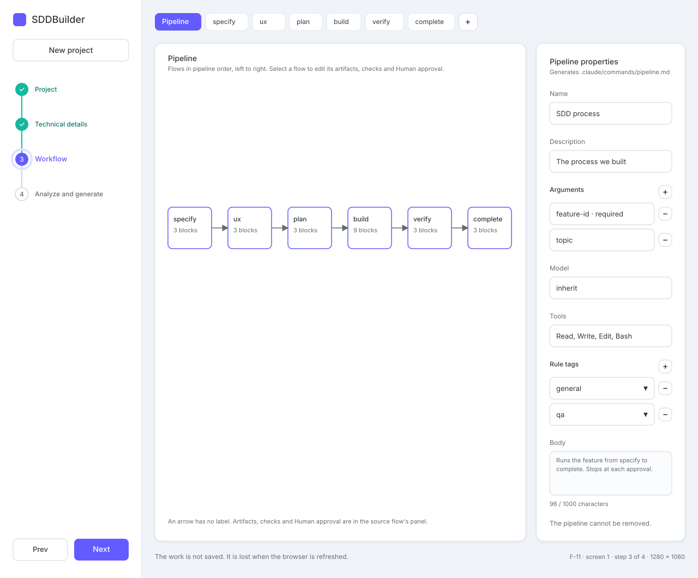
The connection build → verify. Two artifacts, each with Edit and Remove; one check with its own row; the Human approval checkbox, unticked; Delete connection in the footer.
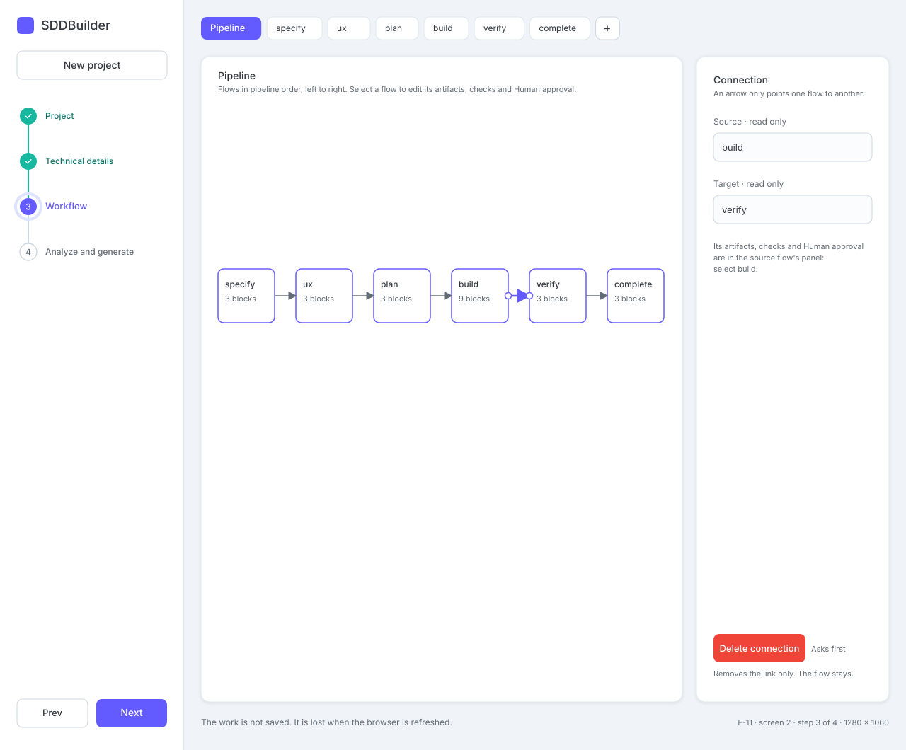
The add check form: a blank description and a diff size threshold that is not set are refused, with the reason beneath each field. Nothing is added.
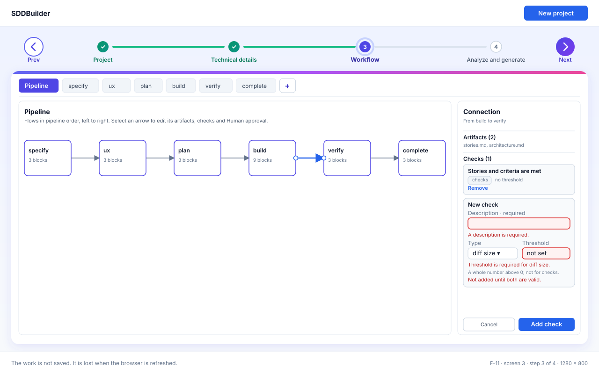
The flow plan: a name already used is refused and the name stays plan. Connect to next flow is disabled with its reason, because plan already has its next flow.
The confirmation names the flow's connections with their artifacts, checks and approval flags. The whole screen is dimmed behind it.
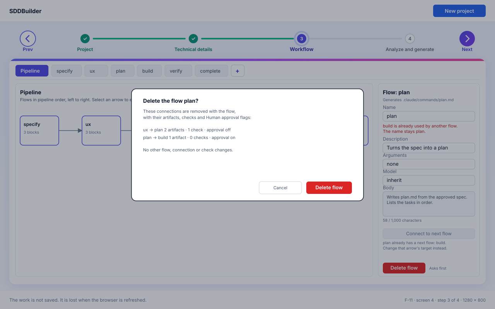
A loop from build back to plan, a blocker beside plan (no End block), and the Not on a drawn item section. Marks never block an edit.
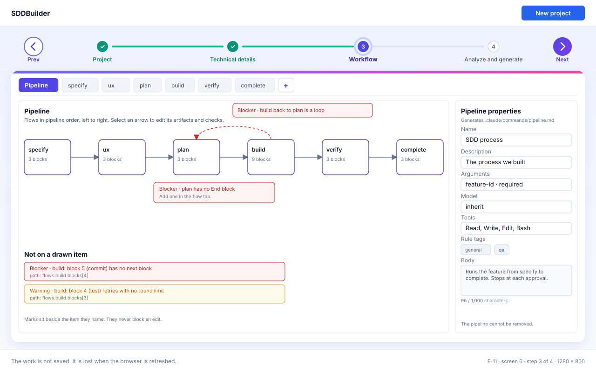
flow-2 is added, selected, empty and not connected. Connect to next flow is open with the picker of the other flows. The row is scrolled to its end.

The verify tab. Its body is a placeholder until F-12 builds the blocks. Unchanged from the approved set.
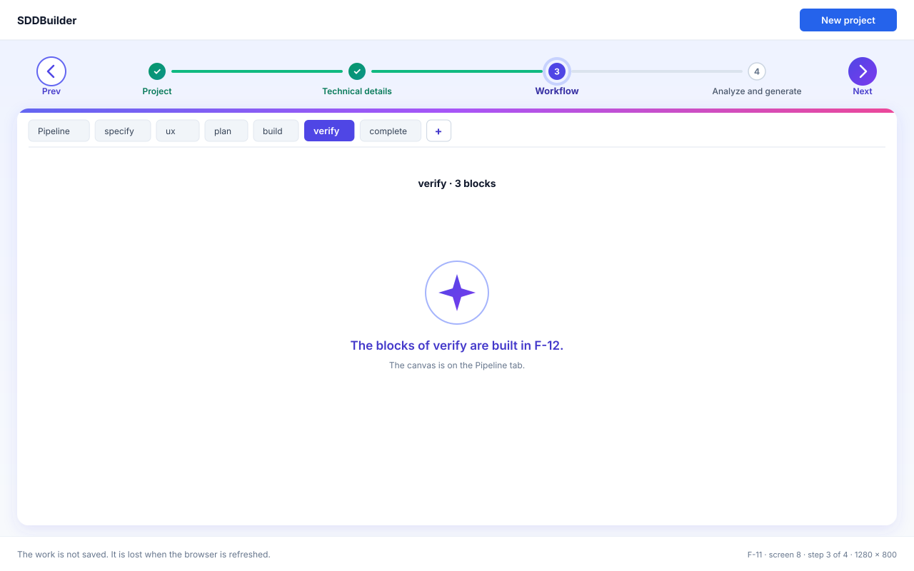
A repeated argument name and a body of 1,001 characters are refused; the saved values stay, with the reason beneath each field.
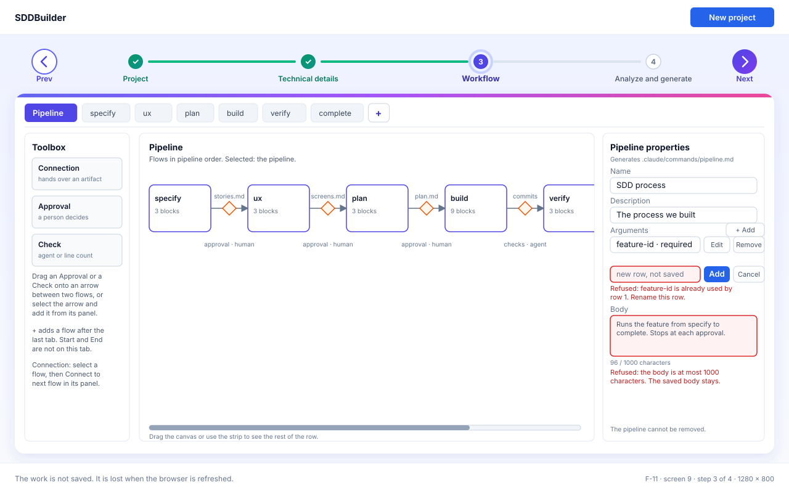
A dashed line from the connection point of complete to the connection point of specify, with the drop target on specify. The drop closes a loop, which shows as a blocker.
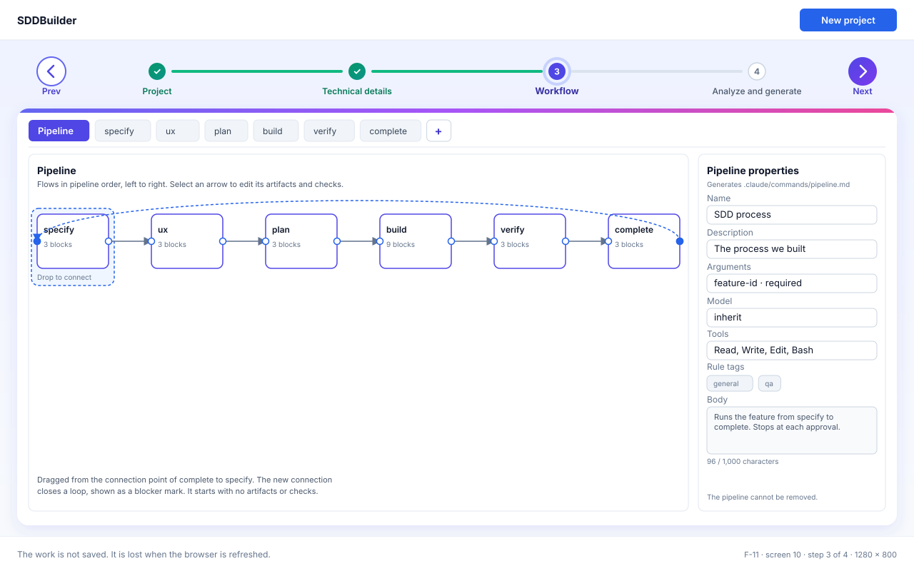
Every flow is deleted. The canvas is empty and the blocker says the pipeline has no flow; no edit is blocked.
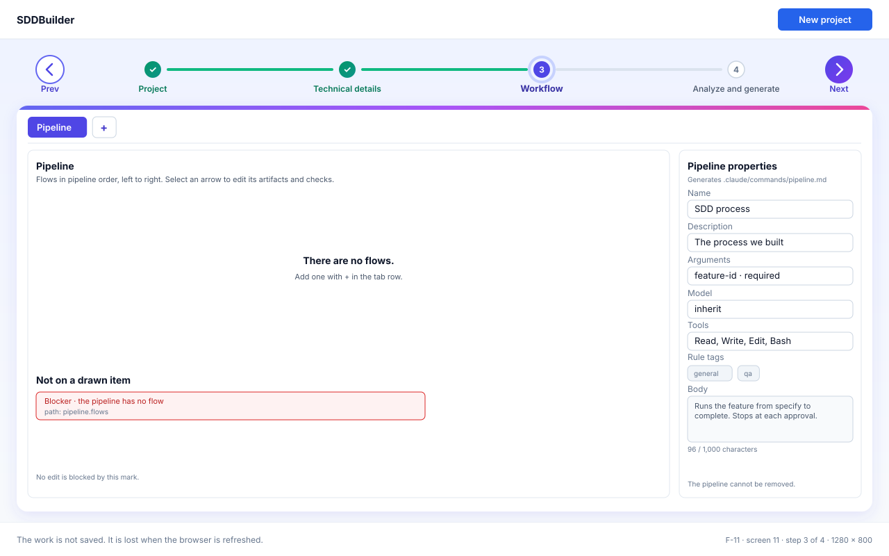
A new artifact: a blank label is refused and the artifact is not added; the template spans several lines.
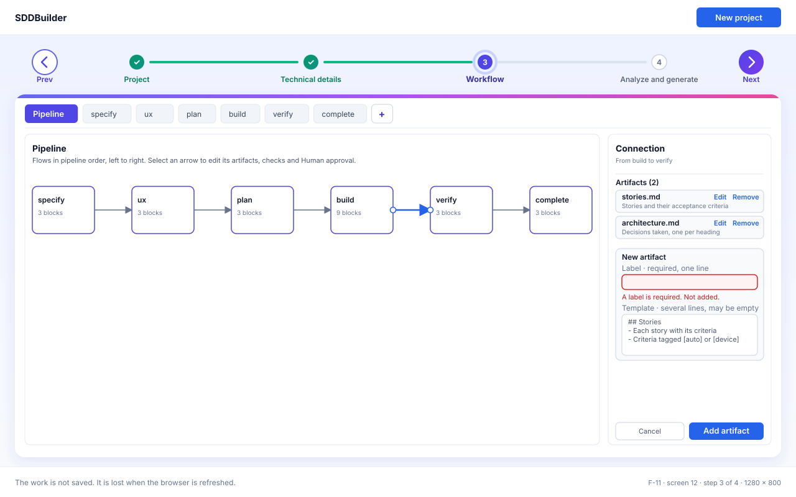
The label is cleared and refused; the field keeps the saved label and the reason is beneath it. Remove is in the form's header; Cancel and Save are in the footer.
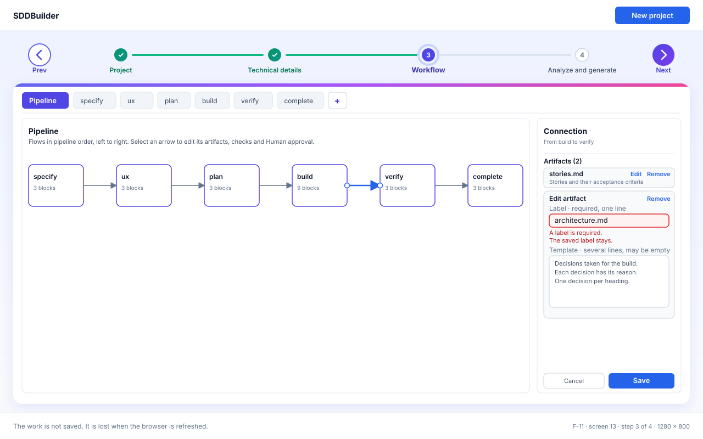
The connection verify → complete with Human approval ticked and no checks yet. The arrow itself shows no label.
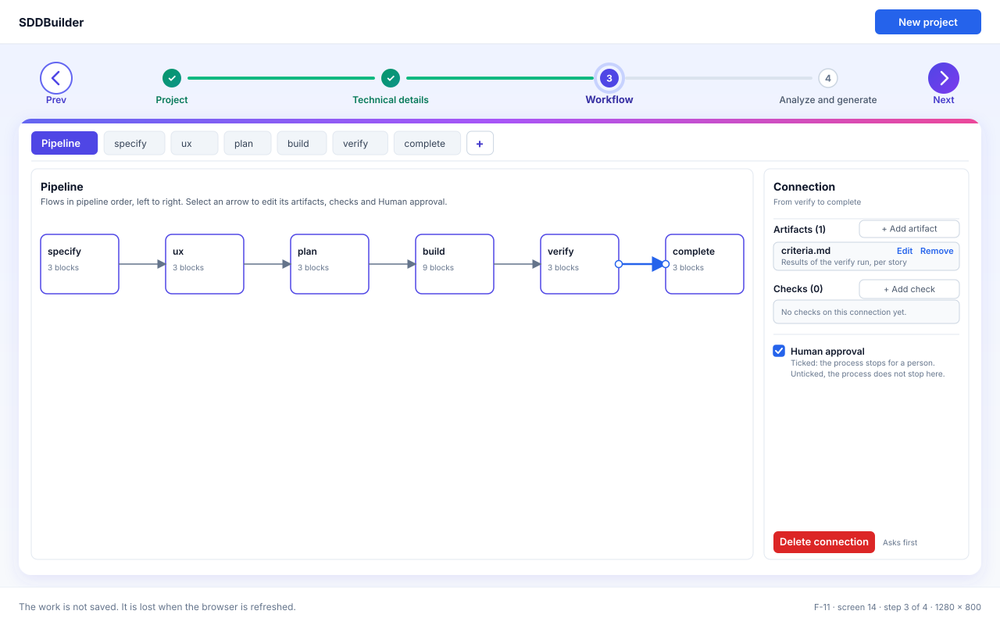